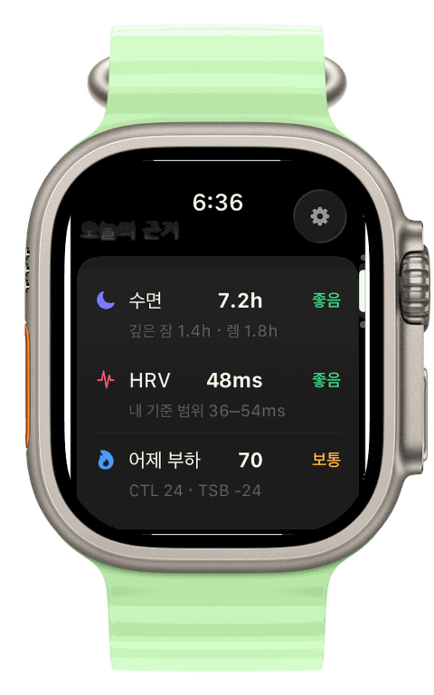
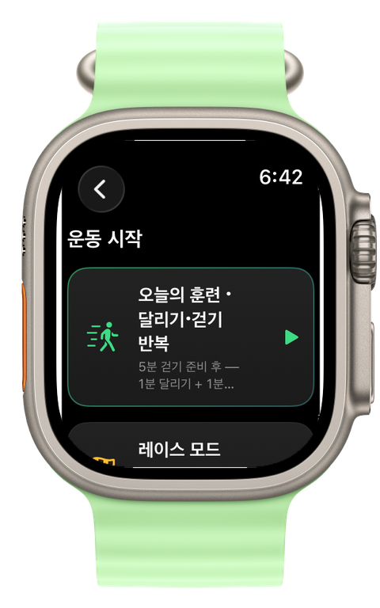
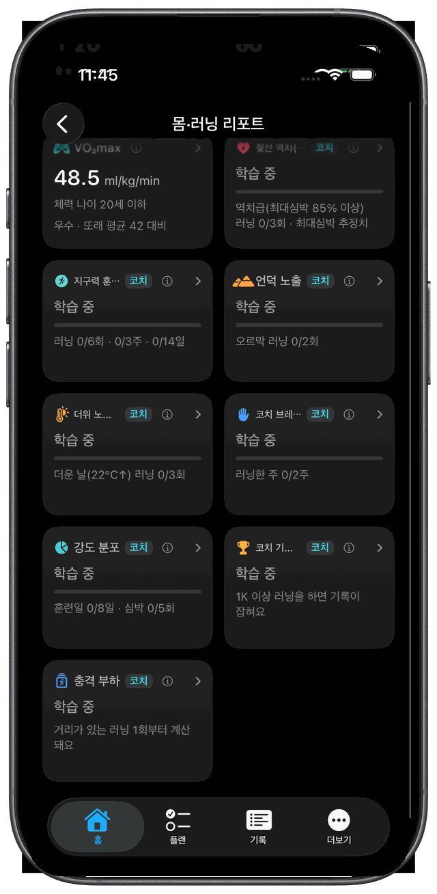

Apple Watch 러닝 코치
애플워치면
충분합니다
러닝 시계를 하나 더 살 필요 없어요. 이미 손목에 있는 데이터로 오늘 뭘 뛸지 코치가 정해 주고, 달리는 동안 목소리로 알려줍니다.
기록은 무료. 코치는 월 ₩1,900이고, 첫 구독이면 한 달 무료입니다.
100%기기 안에서 계산
6개 언어음성 코칭
1개월첫 구독 시 무료 체험


🔊
러닝 시계를 하나 더 살 필요 없어요. 이미 손목에 있는 데이터로 오늘 뭘 뛸지 코치가 정해 주고, 달리는 동안 목소리로 알려줍니다.
기록은 무료. 코치는 월 ₩1,900이고, 첫 구독이면 한 달 무료입니다.
훈련 부하나 회복 시간 같은 지표를 보려면 전용 러닝 시계를 사야 한다고들 합니다. 그런데 계산에 필요한 센서는 애플워치에 이미 다 있습니다.
심박, GPS, 케이던스, 고도. 최근 워치는 접지 시간과 수직 진폭도 잽니다.
훈련 부하, 회복 시간, 역치 추정은 공개된 스포츠 과학 공식입니다. 런비스는 그 공식을 기기 안에서 돌립니다.
숫자를 읽고 오늘 할 일을 정해 주고, 달리는 동안 옆에서 말해 주는 사람. 그 일을 런비스가 합니다.
워치가 아직 없어도 됩니다. 아이폰만으로 GPS 기록과 1km(마일 설정이면 1마일)마다 구간 페이스 안내가 됩니다 — 구독 없이 아이폰만으로 달릴 때 나오는 음성은 이 스플릿 하나입니다. 자세 코칭은 손목 센서가 필요해서 워치에서만 됩니다.
어젯밤 수면, HRV, 안정시 심박, 어제 훈련 부하를 내 28일 기준과 비교합니다. 그걸로 오늘 훈련을 고르고, 왜 그런지 한 줄로 붙입니다.

맨 위에 오늘 할 훈련, 그 아래에 그렇게 정한 근거가 있습니다. 나머지 지표는 참고로 내려갑니다. 지표를 누르면 뜻과 계산 근거, 내 평소 범위가 보입니다.



이 페이지의 앱 화면 사진은 모두 한국어판입니다 — Runvis는 한국에 먼저 출시하고, 지역이 열릴 때마다 그 언어로 촬영한 화면으로 교체합니다. 음성 코칭과 이 페이지의 문구는 이미 6개 언어로 동작합니다.
코치가 하는 말에는 전부 센서가 잡은 근거가 있습니다. 눌러서 실제 안내를 들어 보세요.
| 세션 | 30분당 그 밖의 안내 |
|---|---|
| 이지런 · 롱런 · 달리기·걷기 반복 | 8회까지 |
| 템포 · 레이스 | 6회까지 |
| 인터벌 · 자유 러닝 | 상한 없음 — 켜 둔 항목이 밀도를 정합니다 |
화면과 타이머, 자동 시작 감지는 무료입니다. 코치가 음성으로 함께 진행하는 것이 구독이에요.
"현재 기온 26도, 습도 78퍼센트입니다. 덥고 습해서 땀 증발이 잘 안 되는 날이에요."
지금 있는 동네 기준 실시간 날씨입니다.
"목 돌리기, 20초. 반대 방향으로. 셋, 둘, 하나."
단계별 타이머로 이끌고, 코치를 켜면 음성으로 함께합니다.
"달리기 시작하셨네요. 기록 시작합니다."
손목의 러닝 리듬을 감지해 기록을 시작합니다.
스플릿, 심박 존, 러닝 다이내믹스와 한 줄 코칭은 무료입니다. 구독하면 러닝 안에서 가장 빨랐던 구간을 찾는 PR 북과 젖산 역치 추정, 이번 주 거리 예산을 봅니다.
구간별 페이스, 심박 존 분포, 케이던스와 접지 시간 평균. 그리고 이번 러닝에 대한 한 줄 코칭.
준비도, 수면, HRV, 안정시 심박, VO₂max. 누르면 차트와 내 28일 기준 범위가 열립니다.
완주 기록이 아니라 러닝 안에서 가장 빨랐던 1K, 5K, 10K, 하프 구간을 최근 90일에서 찾아 기록합니다. 이전 기록과 얼마나 차이 나는지도 보여줍니다.
최근 90일 러닝의 30분 최적 구간에서 역치 페이스와 심박을 추정합니다. 30분 구간이 없으면 20분 구간, 그것도 없으면 20분 이상 러닝 세 번의 전체 평균으로 추정하고, 셋 중 어느 쪽이었는지 화면에 항상 적습니다.
최근 4주 훈련량을 보고 이번 주에 뛰어도 되는 거리를 알려줍니다. 통증이 있다고 답하면 그 거리를 줄입니다.
베스트 에포트에서 역산한 VDOT로 거리별 기록을 예측합니다. 애플워치 VO₂max와 나란히 보여줍니다.
추정값에는 '추정'이라고 씁니다. 근거가 부족하면 숫자 대신 "학습 중"이라고 보여줍니다. 확신할 수 없는 지표는 넣지 않았습니다.

오늘 값이 내 28일 범위 안에 있는지, 4주 전과 비교해 어디쯤인지 보여줍니다. 용어를 몰라도 됩니다. 지표마다 뜻과 계산 근거가 붙어 있습니다.
목표 대회와 기록을 넣으면 주차별 로드맵을 짭니다. 지금 체력으로 가능한 목표인지도 솔직하게 말합니다. 플랜을 보는 건 무료이고, 워치에서 코치가 구간마다 진행하는 건 구독입니다.

완주 우선, 균형, 기록 도전. 셋 중 하나를 고르면 훈련 구성과 달리는 중 말투가 함께 바뀝니다. 초보는 어느 코치를 골라도 무리한 인터벌은 받지 않습니다.

대회 코스 GPX를 넣으면 어디서 오르막이 나오는지 먼저 압니다. 경사를 반영한 구간 페이스와 보급 시점을 워치로 보내면, 당일엔 안내만 따라오면 됩니다.
화면 사진은 한국어판입니다.
기록과 분석은 전부 워치와 아이폰 안에서 처리합니다. 날씨를 조회할 때는 약 1km 단위로 반올림한 좌표를, 동네 이름과 코스 자동 생성에는 애플 서비스에 현재 좌표를 그 순간에만 보냅니다. 이 밖에 App Store 결제 처리와 공개 코스·신발 목록 파일 내려받기가 있고, 다섯 가지 전부를 개인정보처리방침에 적어 두었습니다. 운동과 건강 데이터는 어디로도 올라가지 않습니다. 개인정보처리방침
기록과 플랜 보기, 리포트는 무료입니다. 코치가 직접 말하고 분석하는 건 구독이고, 첫 구독이면 첫 달을 무료로 써볼 수 있습니다.
표시 가격은 대한민국 App Store 기준입니다. 옆에 적은 환산액은 대략적인 값이고, 실제 결제에는 각 App Store의 현지 통화 가격이 적용됩니다.
Runvis는 대한민국 App Store에 먼저 출시되며, 다른 지역은 순차적으로 확대됩니다. 출시 시점은 TestFlight 베타가 끝난 뒤에 정해지고, 정해지면 이 페이지에 먼저 적습니다.
구독은 App Store 계정 설정에서 언제든 해지할 수 있고, 해지하면 남은 기간까지 쓰고 자동 갱신이 멈춥니다. 환불은 Apple의 환불 정책을 따릅니다.
아이폰만으로 GPS 기록과 1km(마일 설정이면 1마일)마다 구간 페이스 안내가 됩니다. 구독 없이 아이폰만 들고 달릴 때 나오는 음성은 이 스플릿 하나뿐이고, 심박존·목표 페이스 안내는 구독하면 아이폰에서도 나옵니다. 자세 코칭·언덕 예고·경로 이탈 경보는 워치 러닝에만 있습니다.
심박과 GPS가 있는 모델이면 됩니다. 접지 시간과 수직 진폭을 재는 최신 모델에서는 자세 코칭이 더 촘촘해지고, 못 재는 모델에서는 케이던스 기준으로 동작합니다.
기록은 Apple 건강에 남아 그대로입니다. 해지해도 기록, 플랜 보기, 운동 상세 리포트는 계속 무료로 씁니다.
계정도 서버도 없습니다. 날씨와 동네 이름, 코스 자동 생성을 조회할 때만 위치가 나갑니다. 이 밖에 App Store 결제 처리와 공개 코스·신발 목록 파일 내려받기가 있고, 운동과 건강 데이터는 업로드하지 않습니다.
코치 문장은 한국어, 영어, 일본어, 스페인어, 중국어(번체), 독일어로 말합니다. 스플릿과 언덕 예고처럼 숫자가 들어간 안내도 6개 언어로 나오고, 아직 번역되지 않은 문장은 영어로 나옵니다.
됩니다. 12분만 달리면 예상 5K·10K 기록과 첫 플랜이 그날 만들어집니다. 준비도는 워치를 차고 잔 밤이 기준선에 쌓여야 해서 보통 2주쯤, ACWR은 4주쯤, 퍼포먼스 컨디션은 경로가 기록된 러닝 3회부터 나옵니다.
App Store가 이 구독의 체험을 아직 쓰지 않았다고 판단하는 계정만 받습니다. 전에 같은 구독을 썼거나 체험을 이미 소진한 계정은 첫 결제부터 바로 청구됩니다. 앱의 구매 화면이 지금 어느 쪽인지 사기 전에 항상 알려줍니다.
₩39,000인 평생 이용권은 연간 ₩15,000 기준 약 2.6년, 월 ₩1,900 기준 약 20개월이면 본전입니다. 그보다 오래 쓸 생각이면 평생 쪽이 쌉니다. 평생 이용권은 자동 갱신이 없는 1회 구매이고, Apple 가족 공유가 되는 요금제도 이것뿐입니다 — 월간·연간 구독은 대상이 아닙니다. 다른 지역에서는 그 App Store의 현지 가격이 적용됩니다.
이메일을 남기면 TestFlight 베타가 열릴 때 초대장을 한 통 보내드립니다. 여는 날짜는 아직 정해지지 않았고, 정해지면 이 자리에 먼저 적습니다. 출시 전까지 코치 기능은 전부 무료입니다.
5km 데모 달려보기5km 데모는 코치가 언제 말하고 언제 조용한지 그대로 보여주고, 개인정보처리방침은 데이터가 어디까지 나가는지 적어 둔 문서입니다.